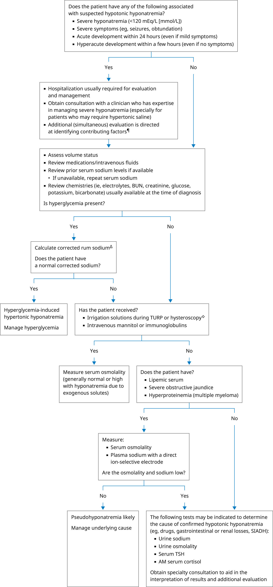

BUN: blood urea nitrogen; TURP: transurethral resection of the prostate; SIADH: syndrome of inappropriate antidiuretic hormone secretion; TSH: thyroid-stimulating hormone.
* The normal serum sodium is 135 to 146 mEq/L (mmol/L). Interpretation of a specific abnormal result should be based upon the reference range reported for that result.
¶ Life-saving interventions should not be delayed while awaiting the results of diagnostic testing.
Δ Add 2 mEq/L to the serum sodium for every 100 mg/dL of serum glucose above the normal value.
◊ TURP and hysteroscopy can be associated with absorption of irrigation solutions (glycine, sorbitol). Optimal therapy of patients with symptomatic hyponatremia varies with the serum sodium concentration, measured serum osmolality, and volume status.